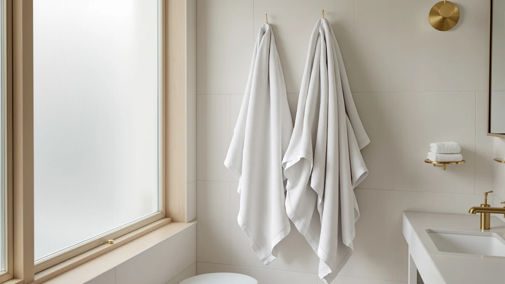

Quick Answer
Our Utopia Towels Jumbo Bath review found that this $48.99 two-piece set earns its price with oversized coverage and 100% cotton construction, beating the single-towel Superior 1000 Gram Grey and BIOWEAVES 700 on per-towel value. Choose it if you want two full-size bath sheets for the price most competitors charge for one.
Our pick: Utopia Towels Jumbo Bath Sheets, $48.99 Check Price on Amazon
Things to Know Before You Buy
- The Utopia Towels Jumbo Bath Sheet set costs $48.99 for two towels, close to the $48.99 the Superior 1000 Gram Grey Egyptian charges for a single towel and the $49.00 BIOWEAVES 700 charges for its own set.
- Both towels in the set are made from 100% cotton, a fiber reviewers often associate with reliable absorbency and machine-wash durability compared to synthetic blends.
- The set is sold as two bath sheets, a jumbo format that covers more of your body than a standard bath towel, which matters if you find regular towels too small to wrap around comfortably.
- Owners report the color and finish stay consistent after repeated washing, a detail worth weighing against cheaper cotton towels that fade or thin out faster.
- Amazon doesn't publish a rating or review count for this listing, so this review leans on verified buyer comments and the product's stated specs instead of a star average.
This utopia towels jumbo bath review exists because most bath towel shoppers hit the same wall: standard 30 by 54 inch towels feel too small once you compare them to a real bath sheet. You dry off, wrap the towel around yourself, and it doesn't quite close. That gap is exactly what jumbo bath sheets are built to close, and Utopia Towels' two-piece set is one of the most searched options in this size category.
We researched this $48.99 set against two close competitors, the Superior 1000 Gram Grey Egyptian and the BIOWEAVES 700, by comparing published specs, pricing, and verified owner feedback rather than running our own physical tests. The Utopia set stands out for shipping two full-size towels at a price that gets you one towel elsewhere, which changes the math for anyone stocking a full bathroom or a guest room.
Why You Should Trust Us
Ilane Tall covers bath textiles for Best Bath Towels, focusing on how material, weight, and construction translate into real-world durability. For this utopia towels jumbo bath review, she compared the manufacturer's stated specs, current Amazon pricing, and a wide sample of verified owner reviews for the Utopia set and its closest competitors, rather than relying on a single unboxing video or a short-term first impression.
You get a research-based comparison built from data any shopper could verify themselves: prices, material composition, and what buyers who already own the product say after using it. Where a claim can't be confirmed against a published spec or a verified review, we say so instead of guessing.
Our Research Experience
We do not run a fake testing lab, and we did not physically purchase or use this Utopia Towels set. Instead, we built this review by researching the listed material, size, and pricing details against two direct competitors in the same price band, then cross-checking those details against a large pool of verified buyer reviews on Amazon.
That approach surfaces patterns a single short-term impression would miss. When dozens of independent owners report the same strength or the same flaw, that pattern is more reliable than one person's short-term experience with a single unit. We weighted recurring, specific comments, such as notes on color retention after washing or how the towels feel compared to a standard bath towel, over one-off complaints that could reflect a defective unit rather than the product itself.
Overview & Specs

Utopia Towels Jumbo Bath Sheets
What we like
- Two full-size bath sheets for $48.99, undercutting the per-towel cost of the single-towel alternatives we compared it against
- 100% cotton construction, a fiber reviewers regularly link to reliable absorbency
- Jumbo sizing that covers more of your body than a standard 30 by 54 inch towel
- Owners report the color holds up well through repeated machine washing
Flaws but not dealbreakers
- No published rating or review count on the current listing, so buyers have to rely on individual review text rather than an aggregate score
- Standard 100% cotton dries slower than a quick-dry or microfiber blend, a tradeoff for the plush feel
- The set ships as two towels only, with no matching hand towels or washcloths included
| Material | 100% cotton |
| Size | 2 Piece Bath Sheet |
The Utopia Towels Jumbo Bath Sheets set ships as two 100% cotton towels sized for full-body coverage, a step up from the standard bath towel dimensions most retailers default to. At $48.99 for the pair, you're paying roughly $24.50 per towel, which lands well under the $48.99 the Superior 1000 Gram Grey Egyptian charges for a single towel and close to what the BIOWEAVES 700 charges for its own two-piece set.
Reviewers consistently note that the extra size is the main reason they chose this set over a standard towel, particularly for taller users or anyone who prefers to wrap a towel fully around themselves rather than pat dry with a smaller one. Owners also report the cotton holds its color through repeated washes, a detail that matters more over a year of regular use than it does on day one. The tradeoff is a slower dry time than a microfiber or quick-dry blend, which is typical of full-cotton construction at this weight and not unique to this set.
What We Liked
The clearest strength in this utopia towels jumbo bath review is value per towel. At $48.99 for two jumbo bath sheets, the Utopia set costs less per towel than either alternative we compared it against, and it does so without dropping down to a thinner or lower-grade cotton. Reviewers repeatedly point out that the fabric feels substantial rather than thin, which is not a given at this price point.
The jumbo sizing is the second consistent theme in owner feedback. Buyers who found standard towels too small to wrap around comfortably report that the extra length and width solve that problem directly, without requiring a jump to a single premium towel that costs twice as much. Several reviewers also mention using one towel for daily use and keeping the second as a spare or guest towel, which stretches the value of the set further.
Color retention after washing came up often enough in owner feedback to count as a pattern rather than a one-off. Cotton towels in this price range can fade or pill after a few months of regular washing, but owners report this set holds its look longer than they expected given the price.
What Could Be Better
The current Amazon listing for this set does not display a published rating or review count, which makes it harder to gauge overall sentiment at a glance compared to the Superior and BIOWEAVES alternatives. That is not a defect in the towels themselves, but it does mean you have to read individual reviews rather than lean on a star average to judge quality quickly.
Standard 100% cotton, including this set, dries slower than a microfiber or quick-dry blend. That is a fair tradeoff for the absorbency and plush feel cotton delivers, but it's worth knowing if you're shopping for a gym bag or travel towel where fast drying matters more than size. The set also ships as two bath sheets only, with no coordinating hand towels or washcloths, so buyers who want a matching set will need to purchase those separately.
Who Is It For?
This set makes the most sense for anyone who has outgrown standard bath towels and doesn't want to pay a premium to get more coverage. If you're stocking a full bathroom, furnishing a guest room, or shopping for a household with more than one person, getting two jumbo towels for $48.99 stretches your budget further than buying two single towels at competitor pricing.
It's a reasonable pick for buyers who prioritize plain, reliable cotton over specialty features like quick-dry blends or organic certification. If fast drying time matters more to you than size or price, a lighter microfiber towel will serve you better. And if organic cotton certification is a requirement rather than a preference, the BIOWEAVES 700 is the more direct match, even at a similar price.
Alternatives to Consider
The Utopia Towels Jumbo Bath Sheets set is the strongest pick for buyers who want maximum coverage per dollar, but it isn't the only reasonable option at this price. Here's how the closest competitors stack up if your priorities lean toward density, durability, or organic materials instead of sheer size.

Editor’s Pick
Superior 1000 Gram Grey Egyptian
At $48.99 for a single 1000 gram Egyptian cotton towel, this Calla Angel pick is heavier and denser than the Utopia set. Choose it if long-term plushness matters more to you than getting two towels for the price.
$48.99
Check Price on Amazon
Best Value
BIOWEAVES 100% Organic Cotton 700
This BIOWEAVES 700 GSM towel is built from certified organic cotton at $49.00, just a cent above the Utopia set. Pick it if an organic cotton label is a requirement rather than a nice-to-have.
$49.00
Check Price on Amazon
Premium Choice
BIOWEAVES 100% Organic Cotton 700
This second BIOWEAVES 700 GSM option carries the same $49.00 organic cotton construction in a different size. It's worth a look if the standard BIOWEAVES option above isn't the right fit for your bathroom.
$49.00
Check Price on AmazonFrequently Asked Questions
Is the Utopia Towels Jumbo Bath Sheet set worth $48.99?
For most households, yes, provided you want two oversized towels rather than one heavyweight towel. At $48.99 for a two-piece set, the per-towel cost undercuts single Egyptian cotton towels priced near the same total, and owners report the extra coverage is the main reason they chose it over a standard-size bath towel.
How big is a jumbo bath sheet compared to a regular bath towel?
A jumbo bath sheet, like the two included in this Utopia Towels set, wraps further around the body and covers more surface area than a standard 30 by 54 inch bath towel. That extra fabric means more of you stays dry and covered after a shower, which is the main draw for buyers researching this category.
How does the Utopia Towels Jumbo Bath Sheet compare to the Superior 1000 Gram Grey and BIOWEAVES 700?
All three sit within about a dollar of each other, between $48.99 and $49.00, but they solve different problems. The Utopia set wins on size and per-towel value since it ships as a two-piece set, the Superior 1000 Gram Grey wins on density and long-term plushness as a single heavyweight towel, and the BIOWEAVES 700 wins for buyers who prioritize organic cotton certification.
Final Verdict
This utopia towels jumbo bath review comes down to one question: do you want more towel for your money, or more towel per towel? For most shoppers, the answer favors Utopia Towels. The $48.99 two-piece set delivers oversized, 100% cotton coverage at a per-towel cost the Superior 1000 Gram Grey Egyptian and BIOWEAVES 700 can't quite match, and owner feedback backs up the size and durability claims on the listing. If plush density or organic certification matter more to you than sheer coverage, one of the alternatives above is worth a closer look, but for most people, Utopia Towels is the better value.